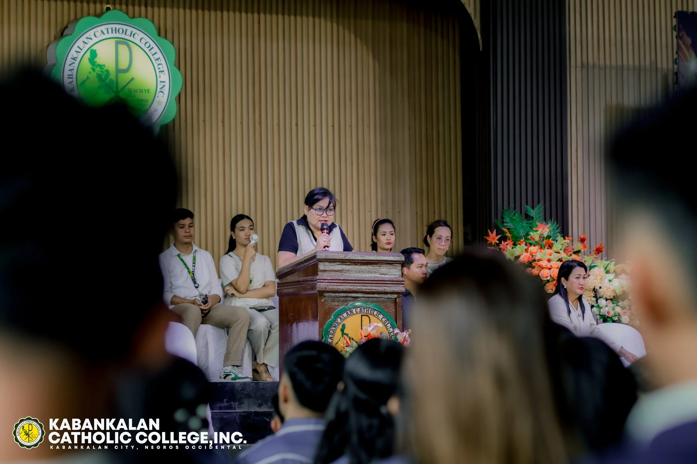
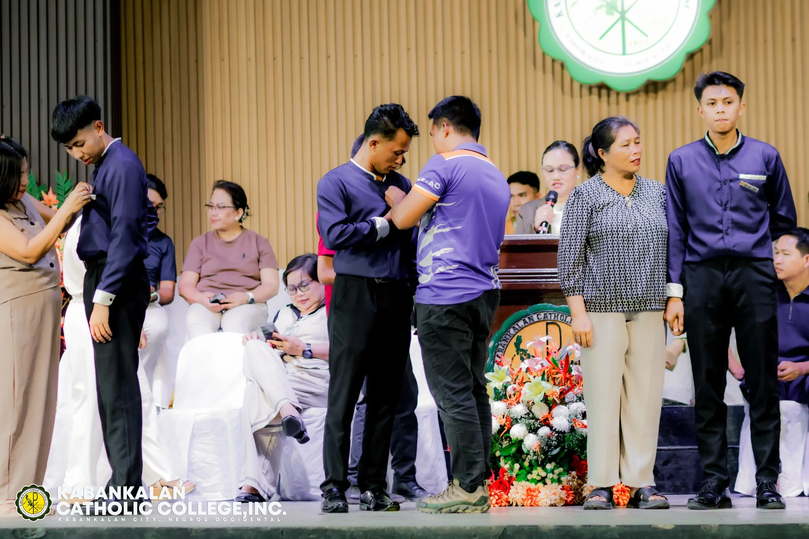

Academic excellence
Rigorous learning that develops critical thinking and a genuine love of learning.

Established 1927 · Kabankalan City, Negros Occidental
Learn with purpose. Grow in faith. Build a life of service.
“Teach Ye All Nations” — Matthew 28:19

About Kabankalan Catholic College
A Christ-centered learning community committed to academic excellence, faith formation, and service since 1927.
For generations, KCC has served as a home for Catholic education in Kabankalan City, Negros Occidental—forming students with strong academics, solid values, and a heart for service.
Year founded
Programs offered
Years of excellence
Pillars of formation
What we stand for
KCC forms students who are not only skilled and knowledgeable, but also grounded in faith and ready to serve their communities.
Rigorous learning that develops critical thinking and a genuine love of learning.
Catholic tradition, prayer, and a personal relationship with God.
Putting the Gospel into practice through hands-on service to others.
Growing capable, compassionate people grounded in strong values.
Education for every stage
Programs offered
Explore college pathways at Kabankalan Catholic College. Program information below is summarized from the official KCC website.
Business, finance, technology, and tourism pathways.
Preparation for teaching, human services, and critical inquiry.
A foundation for careers in criminal justice and public service.
Life at KCC
Campus life goes beyond the classroom—friendships are made, faith is strengthened, and milestones are celebrated together.

The Rite of Pinning recognizes students' dedication and readiness to embrace their future professional roles.

A test of strength, resilience, and commitment to the path of future public servants.
Your KCC journey starts here
Explore the admissions information and discover the KCC community.
Visit Admissions